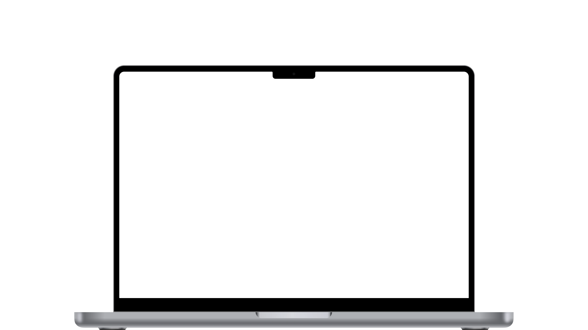

LayoutLab: зробив генератор макетів, який пришвидшив дизайн в 7 раз
тиждень → години263 екрани за 2 місяці
Спроєктував і збудував її самостійно. На вході бриф, на виході редаговані екрани на реальних продакшн-компонентах компанії: що погодили, те і йде в продакшн.
Дивитися деталі